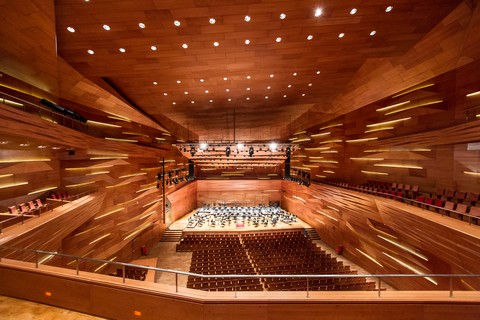

1119 Budapest, Major utca 63.


Technológia
Teljes hanggal
előre!
előre!
A hagyományos vonal- és felület-sugárzók irányítottsága kis frekvencián nem elég hatékony, hiszen a visszhangos termek nagy utózengési idővel rendelkeznek a kis frekvenciákon, azaz a mélyhangoknál. Ez rontja az akusztikai élményt, és a beszédérthetőséget. Az IVS és IFS termékcsalád hangsugárzói Interton Kardioid Technologiával (IKT) készülnek és ezt a jelenséget hivatottak redukálni. Kis fekvenciákon passzív akusztikai hálózati elemekkel mesterségesen biztosítunk kardioid/hiperkardioid irányjelleggörbét a hangsugárzóinknak.
Kardioid hangsugárzóink
két szintje
két szintje
Az elsőrendű kardioid hangsugárzók előrefelé teljes energiával, oldal irányba negyed energiával, hátrafelé ideális esetben egyáltalán nem, valós esetben legfeljebb tized energiával sugároznak.
A másodrendű kardioid hangsugárzók előrefelé teljes energiával, oldal irányba 1/16 azaz tizenhatod energiával, hátrafelé ideális esetben egyáltalán nem, valós esetben legfeljebb tizenhatod energiával sugároznak.
Visszhangzó helyiségekbe
VONALSUGÁRZÓ
A Hiperkardioid IVS vonalsugárzó IKT alkalmazásával a kis frekvenciákon horizontálisan hiperkardioid, vertikálisan pedig fokozottan nyalábolt irányjelleggörbével rendelkezik. A hasonló méretű, kis frevenciákon közel kör alakú irányjelleggörbéjű vonalsugárzókhoz képest irányítottabb, ezért „nehéz akusztikai körülmények” között a lehető legjobb hangosítási megoldást nyújtja. Ideálisan alkalmazható nagy utózengésű termekben: templomokban, előcsarnokokban, sportcsarnokokban, uszodákban, előadótermekben, stb.
Javítja a beszédérthetőséget
FELÜLETSUGÁRZÓ
Felületsugárzóink az Interton kardioid-technológia alkalmazásával tovább javítják a beszédérthetőséget. Ez a technológia a kis és közepes frekvenciákon fokozza az irányítottságot, így tovább csökkenti a különböző felületekről visszaverődő zavaró reflexiók intenzitását, ezáltal kiváló beszédérthetőséget és minimális gerjedékenységet biztosít. Ugyanakkor nagy távolságig hatékony, még 100m távolságban is 90dB hangnyomást állít elő.
Kiváló kiegészítés
MÉLYSUGÁRZÓ
IKT eljárással, passzív akusztikai hálózati elemekkel felépített subsugárzók. Elsőrendű és másodrendű kardioid irányjelleggörbével készítjük.Kiválóan kiegészítik az irányított vonal- és felületsugárzókat. Az irányított mélysugárzók alkalmazása különösen fontos visszhangos termekben a káros utózengés csökkentése, valamint szabadtéren a zajszennyezés minimalizálása érdekében.
Referenciáink
© 2020 Minden jog fenntartva!